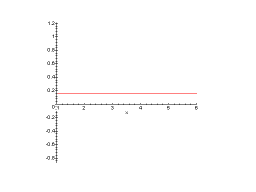
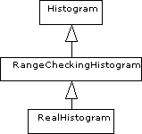

Vi kommer även att diskutera inlämningsuppgift 1.
Turtle i sin utökade variant några nya operationer).
Man kan även låta den nya klassen modifiera någon eller några av de ärvda
operationerna. Om vi exempelvis vill ha en sköldpadda som räknar det antal steg
den tar kan vi införa en klass TripmeterTurtle som ärver från
klassen Turtle och göra de tillägg och ändringar som behövs.
För att räkna antalet steg behövs ett attribut, nbrOfSteps, och
en operation, getNbrOfSteps(), som ger värdet på attributet.
Vi får alltså:
class TripmeterTurtle extends Turtle {
private int nbrOfSteps;
public TripmeterTurtle(SimpleWindow w, int x, int y) {
super(w,x,y);
this.nbrOfSteps = 0;
}
public int getNbrOfSteps() {
return this.nbrOfSteps;
}
// ...eventuellt övrigt...
}
Hur skall vi då få sköldpaddan att räkna sina steg? Vi vill kunna använda
vår nya sköldpadda på ungefär samma sätt som den gamla, dvs vi skall kunna
skriva: SimpleWindow w = new SimpleWindow(500,500);
TripmeterTurtle t = new TripmeterTurtle(w,250,250);
RandomNumberGenerator rng = new RandomNumberGenerator();
t.penDown();
for (int i = 1; i <= 10; i++) {
t.left(rng.randInt(0,359));
t.forward(rng.randInt(1,10));
}
System.out.println("Sköldpaddan har gått " + t.getNbrOfSteps() + " steg.");
Den enda gång sköldpaddan går framåt är operationen
forward(int), så det är när vi kör den som vi kan räkna antalet
steg. Vi modifierar därför forward(int)-operationen genom att i vår
nya klass deklarera en ny forward(int)-operation.
Vi sade förra veckan att vi kunde ha flera operationer med samma namn, men olika signatur, i en klass och kallade det overloading (överlagring på svenska). Det vi gör nu är att i en subklass införa en ny operation med samma signatur som en ärvd operation, det kallas för overriding. Lägg dock märke till att vi i varje klass fortfarande bara kan ha en operation med en given signatur.
I klassen TripmeterTurtle får vi en operation
forward(int) som skall fungera nästan precis som den i klassen
Turtle gör, men som dessutom skall räkna upp antalet steg. Vi kan
göra det enkelt för oss genom att anropa den forward(int)-operation
vi ärvt från superklassen, och därefter räkna upp antalet steg:
public void forward(int nbrOfSteps) {
super.forward(nbrOfSteps);
this.nbrOfSteps += nbrOfSteps;
}
Här har vi använt det reserverade ordet super för att markera
att vi vill använda operationen forward(int) i faderklassen,
analogt med hur vi anropade konstruktorn i faderklassen. Lägg märke till att
vi bara behöver skriva super när den nya operationen har samma
signatur som den gamla, och alltså inte när vi anropar andra operationer.
När vi nu anropar forward(int) på en
TripmeterTurtle så är det den nya operationen som anropas och
alltså kommer vår sköldpadda att hålla reda på sina steg.
this.forward(nbrOfSteps);
istället för super.forward(nbrOfSteps); i exemplet ovan?
TripmeterTurtle skall
kunna avgöra om den befinner sig innanför sitt fönster, och dessutom skall
kunna bestämma avståndet till en annan Turtle? (Dvs vad måste
ändras i exemplet ovan?) Under ransoneringen under andra världskriget började en statistiker fatta misstankar mot sin bagare, när han köpte 200-grams formbröd tyckte han att bröden var anmärkningsvärt små. Han vägde därför sina bröd under 100 dagar och fick följande värden (i gram):
191.5 193.0 192.9 201.0 190.5 198.3 203.7 193.7 195.6 193.1 187.7 195.0 187.9 183.2 193.3 178.7 193.0 194.8 189.2 200.3 200.0 195.3 190.0 183.5 206.5 183.8 210.5 189.7 206.3 195.7 185.1 186.0 183.1 190.0 196.1 194.5 190.1 178.4 206.7 197.3 198.9 190.5 185.4 195.7 189.1 207.6 202.8 190.8 187.2 197.9 184.5 201.0 196.8 198.6 211.6 196.7 187.6 195.4 184.5 197.5 184.6 192.7 197.4 199.4 186.4 187.7 185.8 184.1 199.6 194.0 192.8 195.9 198.9 210.1 205.7 186.9 193.3 186.9 185.8 194.9 197.4 188.4 192.5 197.5 197.6 194.3 184.2 205.9 190.7 192.3 181.6 199.1 198.0 194.6 186.6 189.2 186.6 197.0 196.2 192.4Eftersom bröden uppenbarligen varit för små gick statistikern till bagaren och hotade att anmäla honom om ha inte bytte till en större form.
Bagaren lovade vid allt han höll heligt att byta form, och under de följande 100 dagarna fick statistikern följande resultat när han vägde sina bröd:
202.5 200.4 203.8 213.7 201.3 202.2 205.1 200.5 206.3 201.2 203.9 200.5 205.8 205.2 202.9 200.4 200.1 200.2 205.8 205.9 200.9 202.9 205.9 201.4 203.8 207.3 207.5 211.6 214.8 201.7 200.3 207.7 212.7 212.6 207.1 202.7 200.1 200.0 204.1 201.9 201.4 200.5 201.6 208.5 204.8 201.2 212.3 204.9 200.3 207.2 201.6 203.5 206.5 201.4 200.8 205.4 202.0 212.9 203.1 202.8 200.2 200.4 200.6 203.8 200.5 202.0 202.0 207.0 211.6 201.7 205.4 200.2 202.3 200.5 205.6 207.4 200.2 203.5 218.3 212.3 202.3 202.6 200.6 205.5 210.5 200.3 200.1 204.0 200.5 200.0 207.1 205.4 202.7 205.3 200.4 201.6 203.0 201.2 206.1 206.6Kan statistikern nöja sig med bagarens försäkran att han bytt form?
Om man bara beräknar medelvärden och standardavvikelser får man lätt intrycket att bagaren verkligen bytt form (dessutom till en form som är större än 200 gram), men det finns bättre metoder att testa vikterna på dessa bröd.
Ni skall läsa sannolikhetsteori senare under er utbildning, just nu behöver vi bara känna till några enkla fakta. När vi kastar en liksidig tärning är sannolikheten för varje utfall lika stort (1/6), vi säger att frekvensfunktionen för tärningskastet är konstant och kallar sådana händelser rektangelfördelade, på grund av formen på frekvensfunktionen.

För att gruppera och räkna våra bröd utvecklar vi en ganska allmän histogramklass, men börjar med helt elementära histogram och bygger på denna klass i flera steg.
Det mest grundläggande histogramklass man kan tänka sig har följande specifikation:
specification Histogram {
/**
* Skapar ett nytt primitivt histogram, med ett givet antal klasser.
*/
public Histogram(int nbrOfClasses) {
}
/**
* Tar reda på antalet klasser
*/
public int getNbrOfClasses() {
}
/**
* Tar reda på antal värden i en given klass.
*/
public int getCount(int classNbr) {
}
/**
* Registrerar ett nytt värde i en given klass.
*/
public add(int classNbr) {
}
}
Denna klass kan användas för att registrera värden mellan 0 och
nbrOfClasses-1, precis som vi använde vanliga heltalsvektorer för
registrering i början av kursen.
Klassen innehåller ett attribut motsvarande vår registreringsvektor, och enkla operationer för att hantera vektorn:
class Histogram {
private int count[];
private int nbrOfClasses; // kan vi faktiskt undvara, (count.length)
public Histogram(int nbrOfClasses) {
this.count = new int[nbrOfClasses];
this.nbrOfClasses = nbrOfClasses;
}
public int getNbrOfClasses() {
return this.nbrOfClasses; // eller return this.count.length;
}
public int getCount(int classNbr) {
return this.count[classNbr];
}
public void add(int classNbr) {
this.count[classNbr]++;
}
}
Denna klass kan användas exempelvis för att testa en slumptalsgenerator
(randInt(int,int)-operationen skall ju ge rektangelfördelade
värden): Histogram h = new Histogram(10);
RandomNumberGenerator rng = new RandomNumberGenerator();
for (int i = 1; i <= 100000; i++) {
h.add(rng.randInt(0,9));
}
for (int i = 0; i < 10; i++) {
System.out.println(i + ": " + h.getCount(i));
}
Om slumptalsgeneratorn genererar rektangelfördelade tal borde vi få
ungefär lika många av varje värden. Följande körning antyder att generatorn
fungerar bra: 0: 10027
1: 10018
2: 9956
3: 10145
4: 9991
5: 9873
6: 9903
7: 9923
8: 10060
9: 10104
Det är inte alltid vi kan vara helt säkra på att de värden vi vill
registrera alltid ligger inom givna gränser, om vi skickar ett otillåtet värde
till h ovan får vi ett exekveringsfel (felaktigt index i vektorn).
Det är därför naturligt att införa en subklass till Histogram
som ser till att alla värden ligger i rätt intervall, och håller reda på hur
många värden som varit för stora eller för små:
class RangeCheckingHistogram extends Histogram {
private int
nbrOfTooSmallValues,
nbrOfTooBigValues;
/**
* Skapar ett enkelt histogram som kontrollerar att alla värden
* ligger inom givna ramar.
*/
public RangeCheckingHistogram(int nbrOfClasses) {
super(nbrOfClasses);
this.nbrOfTooSmallValues = 0; // egentligen onödigt
this.nbrOfTooBigValues = 0; // -"-
}
/**
* Ger antalet värden som varit för små.
*/
public int getNbrOfTooSmallValues() {
return this.nbrOfTooSmallValues;
}
/**
* Ger antalet värden som varit för stora.
*/
public int getNbrOfTooBigValues() {
return this.nbrOfTooBigValues;
}
/**
* Registrerar ett nytt värde i en given klass, kontrollerar att
* klassen är i rätt intervall.
*/
public void add(int classNbr) {
if (classNbr < 0) {
this.nbrOfTooSmallValues++;
} else if (classNbr >= this.getNbrOfClasses()) {
this.nbrOfTooBigValues++;
} else {
super.add(classNbr);
}
}
}
Lägg märke till operationen add(int), den modifierar den
add(int)-operation som fanns i superklassen, och testar att det
givna värdet faller inom givna gränser.
Att läsa in och registrera 100 tal mellan 0 och 9 från tangentbordet kan göras med:
RangeCheckingHistogram h = new RangeCheckingHistogram(10);
for (int i = 1; i <= 100; i++) {
int value = Keyboard.readInt();
h.add(value);
}
if (h.getNbrOfTooSmallValues() > 0) {
System.out.println("Det förekom " +
h.getNbrOfTooSmallValues() +
" för små värden.");
}
for (int i = 0; i < 10; i++) {
System.out.println(i + ": " + h.getCount(i));
}
if (h.getNbrOfTooBigValues() > 0) {
System.out.println("Det förekom " +
h.getNbrOfTooBigValues() +
" för stora värden.");
}
Vi har nu två klasser för att skapa histogram, men fortfarande ingen klass
som är riktigt lämplig för uppgiften att registrera vikterna på bröden. Det är
egentligen två saker vi saknar, dels vill vi kunna registrera reella värden,
dessutom vill vi inte alltid använda den undre gränsen 0.
Vi inför den nya klassen RealHistogram, med vars hjälp vi kan
registrera värden mellan givna reella gränser, indelade i ett givet antal
klasser (det är lite olyckligt att man kallar de olika intervallerna
just klasser, men så är det). För att fånga upp de värden som ligger utanför
våra gränser låter vi den nya klassen ärva från klassen
RangeCheckingHistogram.
class RealHistogram extends RangeCheckingHistogram {
private double
lowLimit,
highLimit,
classWidth;
/**
* Skapar ett histogram för att registrera reella värden i ett
* givet intervall i ett givet antal klasser.
*/
public RealHistogram(double lowLimit, double highLimit, int nbrOfClasses) {
super(nbrOfClasses);
this.lowLimit = lowLimit;
this.highLimit = highLimit;
this.classWidth = (this.highLimit - this.lowLimit)/nbrOfClasses;
}
/**
* Registrerar ett nytt värde.
*/
public void add(double value) {
super.add(this.classify(value));
}
/**
* Klassbestämmer ett givet värde (ger ett heltal).
*/
protected int classify(double value) {
return (int) Math.floor((value-this.getLowLimit())/this.getClassWidth());
}
/**
* Ger histogrammets undre gräns.
*/
public double getLowLimit() {
return this.lowLimit;
}
/**
* Ger undre gränsen för en given klass (0..).
*/
public double getLowLimit(int classNbr) {
return this.lowLimit + classNbr*this.getClassWidth()
}
/**
* Ger histogrammets övre gräns.
*/
public double getHighLimit() {
return this.highLimit;
}
/**
* Ger övre gräns för en given klass (0..).
*/
public double getHighLimit(int classNbr) {
return this.getLowLimit(classNbr+1);
}
/**
* Ger bredden på klasserna i histogrammet.
*/
public double getClassWidth() {
return this.classWidth;
}
}
(Det finns ett subtilt problem med denna klass, se nedan.)
Genom vårt sätt att dela upp problemet har vi nu fått följande klasshierarki:

där de olika klasserna har olika användningsområden (alla tre är användbara var för sig).
För att nu testa bröden i vårt ursprungliga problem kan vi skriva följande testprogram:
RealHistogram h = new RealHistogram(180,220,10);
FileReader reader = new FileReader("breadBefore");
for (int i = 1; i <= 100; i++) {
h.add(reader.readDouble());
}
System.out.println("< " + h.getLowLimit() +
": " + h.getNbrOfTooSmallValues());
for (int i = 0; i < h.getNbrOfClasses(); i++) {
System.out.println("< " + h.getHighLimit(i) + ": " +
h.getCount(i));
}
System.out.println("> " + h.getHighLimit() +
": " + h.getNbrOfTooBigValues());
och när vi kör får vi dessa värden får vi: < 180.0: 2
< 184.0: 5
< 188.0: 20
< 192.0: 13
< 196.0: 25
< 200.0: 20
< 204.0: 6
< 208.0: 6
< 212.0: 3
< 216.0: 0
< 220.0: 0
> 220.0: 0
dvs det förefaller som om bröden är ungefär normalfördelade med ett
medelvärde runt 195 gram.
Om vi istället testar vikterna efter tillsägelsen får vi:
RealHistogram h = new RealHistogram(180,220,10);
FileReader reader = new FileReader("breadAfter");
// resten som tidigare...
och resultatet blir: < 180.0: 0
< 184.0: 0
< 188.0: 0
< 192.0: 0
< 196.0: 0
< 200.0: 0
< 204.0: 60
< 208.0: 28
< 212.0: 4
< 216.0: 7
< 220.0: 1
> 220.0: 0
Det är ganska uppenbart att bagaren har använt samma form, men
kontrollmätt statistikerns bröd varje gång (och valt nya bröd tills han fick ett
bröd som vägde minst 200 gram). Formen på frekvensfunktionen avslöjar honom.
RealHistogram h = new RealHistogram(180,220,10);
h.add(201);
så kommer vi att få ett annat resultat än vi tänkt oss. När vi skriver
anropet h.add(201) anropas nämligen inte den
add(double)-operation vi implementerat i klassen
RealHistogram, istället anropas den add(int)-operation
som ärvts ned från RangeCheckingHistogram-klassen, dvs vi får
overloading istället för overriding. Histogrammet försöker räkna upp värdet i
klassen med index 201, och eftersom vi inte har någon sådan kommer antalet för
stora värden att räknas upp.
Ett enkelt sätt att slippa detta problem är att i klassen
RangeCheckingHistogram infoga följande operation:
public void add(int value) {
this.add((double)value);
}
Denna operation omvandlar heltalet till ett double-värde
varpå 'rätt' add-operation anropas.